Getting Started
OSRTIME Sync-Box TCR transforms your Android device into a professional timecode generator and sync box for film, broadcast, and live production.
Installation & First Launch
After installing the application (currently available via Private Beta), launch it to begin. On first start, you will be asked to grant the required system permissions.
Microphone — Required for LTC signal input via the device microphone or USB audio interface.
Storage — Required for BWF field recording to local storage.
Local Network — Required for Wi-Fi timecode synchronization between devices.
The App at a Glance
After granting permissions, the app opens on the Master page showing a running Time of Day (TOD) timecode. The bottom navigation bar provides access to all major areas of the app:
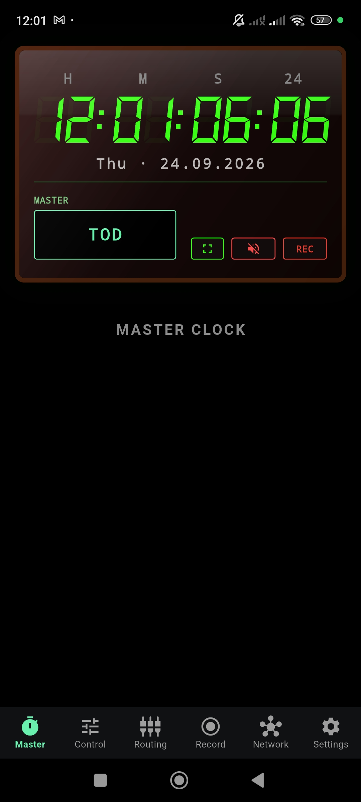
| Tab | Function |
|---|---|
| Master | Main timecode display — shows the active generator output in a large, readable format. |
| Control | Central configuration — manage TOD, Custom timer, Jam sync, and Slave sources. |
| Routing | Audio input configuration — select microphone or USB interface, arm recording channels. |
| Record | BWF field recording — view, manage, and export recorded audio with embedded timecode. |
| Network | Wi-Fi synchronization — discover devices, sync timecode clocks across a fleet. |
| Settings | App configuration — language, audio preferences, recording format, storage path. |
Master Clock
The Master page is the primary output display of the timecode engine. It shows the current timecode in a large seven-segment format, optimized for visibility on dark sets and at a distance.
Display Elements
The Master display consists of several information layers:
- Timecode Display — HH:MM:SS:FF in large green digits. The labels H M S and the frame rate indicator are shown above.
- Date Line — Day of week and date below the timecode.
- Mode Chip — Shows the current source mode: TOD, CUST, JAM, SLV, or WIFI SLV.
- Action Buttons — Fullscreen toggle, LTC audio output (mute/unmute), and Record toggle.
Timing Sources
The timecode generator can operate in four distinct modes, each selectable from the Control page:
Time of Day — locks the timecode to the device's real-time clock. The default and most common mode for production.
Free-running timecode from a user-defined start value. Independent of wall-clock time. Useful for rehearsals or custom labeling.
One-time sync from an external source (LTC input or Wi-Fi master). After jamming, the clock free-runs independently.
Continuously chases an incoming timecode source. The display tracks the external clock in real time.
WiFi Slave Display
When the device is operating as a Wi-Fi Slave, the Master display updates to reflect the remote source:
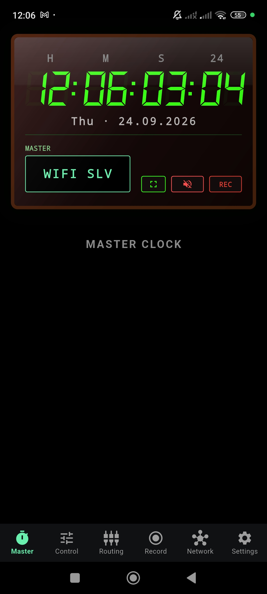
Control
The Control page is the central configuration hub. It provides direct access to all timecode sources, jam status, and external input monitors.
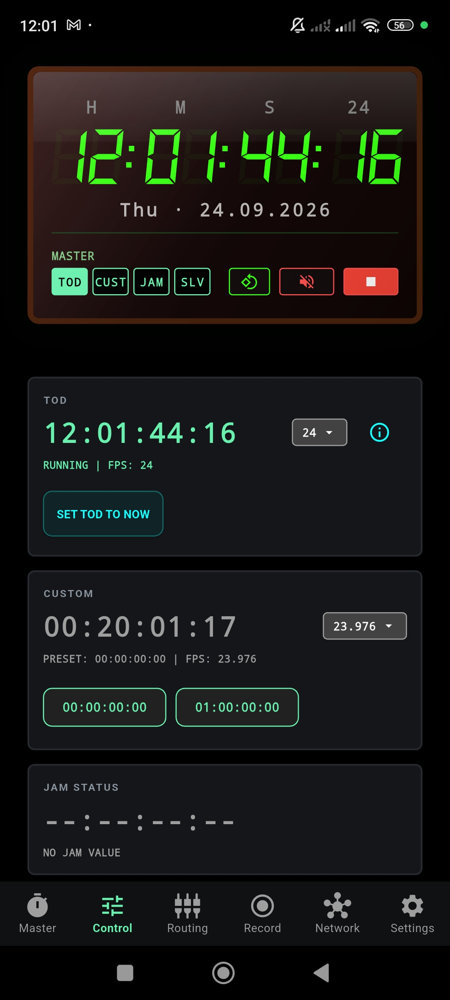
TOD Section
Shows the current Time of Day timecode with status (RUNNING), selected frame rate, and an info button for technical details. Use SET TOD TO NOW to resynchronize with the device clock.
Custom Timer
An independent free-running timecode generator with its own frame rate selector. Provides preset buttons for quick start values:
- 00:00:00:00 — Reset to midnight
- 01:00:00:00 — Jump to one hour
Jam Status
Displays the currently jammed timecode value and its source. When no jam has been performed, it shows NO JAM VALUE with placeholder dashes.
External Input Sources
Below the Jam Status, two additional monitors appear when external sources are available:
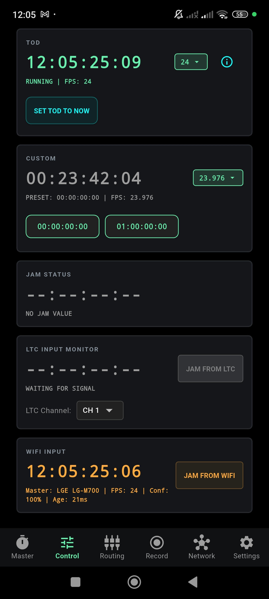
- LTC Input Monitor — Decodes incoming Linear Timecode from the audio input. Shows lock status, detected frame rate, LTC channel selector, and a JAM FROM LTC button.
- WiFi Input — Displays timecode received from a network Master device. Shows the Master identity, frame rate, confidence level, and signal age. Provides a JAM FROM WIFI button.
Jam Result
After performing a Jam (from either LTC or WiFi), the Jam Status section updates to confirm the operation:
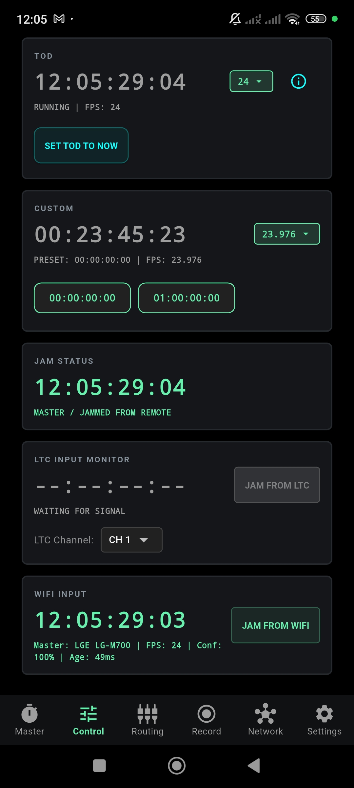
Audio & Routing
The Routing page configures which physical audio input the app uses, and how its channels are assigned for LTC reception and audio recording.
Built-in Microphone
By default, the app uses the device's built-in microphone in Auto Mode. This is sufficient for receiving LTC signals from a nearby source (e.g., a timecode slate or LTC output cable connected via the headphone jack).
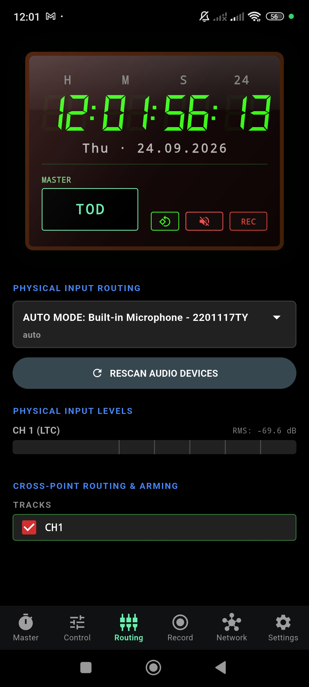
USB Audio Interface
When a class-compliant USB audio interface is connected, additional channels become available. OSRTIME supports up to 4 input channels simultaneously.
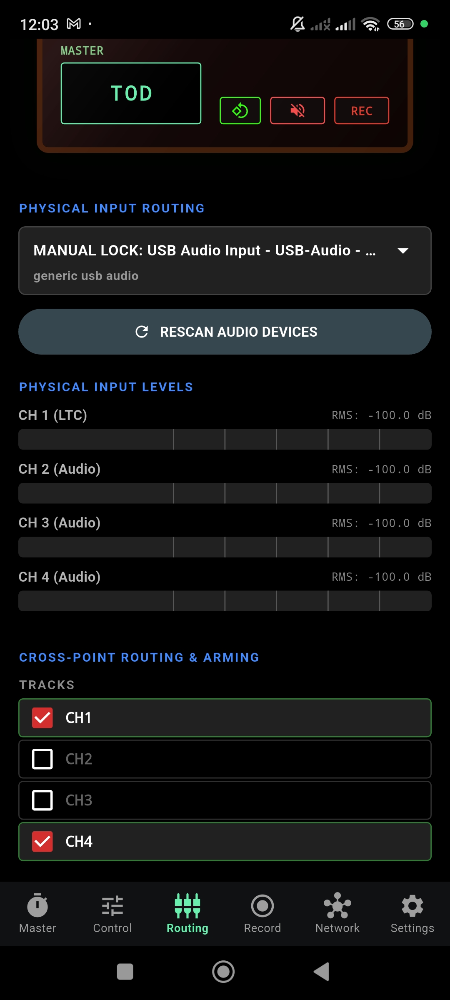
Cross-Point Routing & Arming
The lower section shows the available recording tracks. Each channel can be individually armed (enabled) for recording:
- CH1 — Typically assigned to LTC. Armed by default.
- CH2, CH3, CH4 — Additional audio channels from the USB interface. Enable by tapping the checkbox.
Use the RESCAN AUDIO DEVICES button after connecting or disconnecting a USB interface. The app will re-enumerate available inputs and update the channel list.
Recording
The Record page manages BWF (Broadcast Wave Format) field recording with embedded timecode metadata. All recordings include precise timecode stamps for seamless post-production sync.
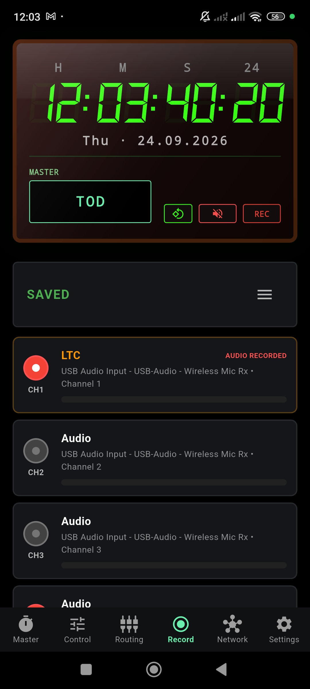
Channel Layout
Each armed channel from the Routing configuration appears as a separate track card:
- CH1 · LTC — The primary timecode track. Shows AUDIO RECORDED when data has been captured.
- CH2–CH4 · Audio — Additional audio tracks. Each shows the source device and channel number.
Level meters on each card show real-time signal strength during recording.
Starting a Recording
Recording is controlled via the REC button visible on both the Master page and the persistent header bar. You do not need to be on the Record page to start or stop recording — it works from any page in the app.
Recordings are saved as BWF files with embedded iXML and bext metadata, including timecode, sample rate, and channel assignment. The default sample rate is 48.0 kHz, configurable in Settings.
Network & Sync
OSRTIME features a wireless synchronization engine that allows multiple devices to share a common timecode clock over standard Wi-Fi networks.
How It Works
Connect to the Same Network
Ensure all devices are on the same Wi-Fi network or mobile hotspot. Use the HOTSPOT SETTINGS or WI-FI SETTINGS buttons on the Network page for quick access to system settings.
Automatic Discovery
Devices discover each other automatically once they share a network. No manual IP configuration is required. The Network page shows all detected devices under NETWORK DEVICES with a Connected indicator.
Assign Roles
Each device can operate as MASTER or SLAVE. The Master sends its timecode to all connected Slaves. Toggle the role using the Master/Slave selector.
Synchronize
Press SYNC CHAIN to begin synchronization. The status will transition through several phases.
Sync Lifecycle
A sync operation progresses through three stages:
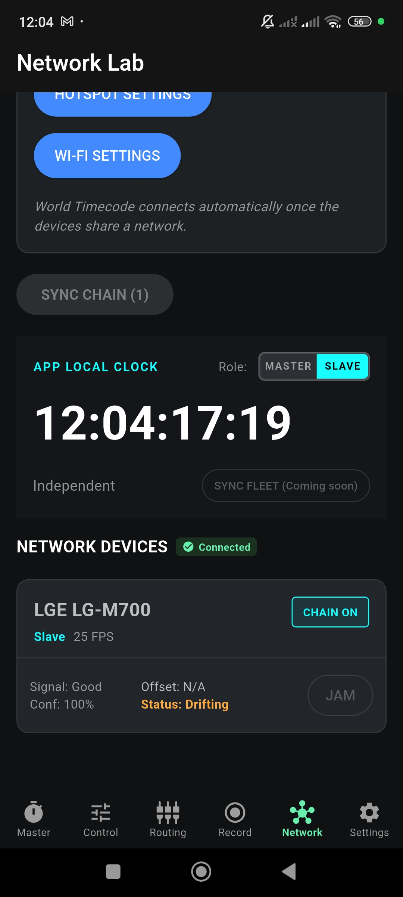
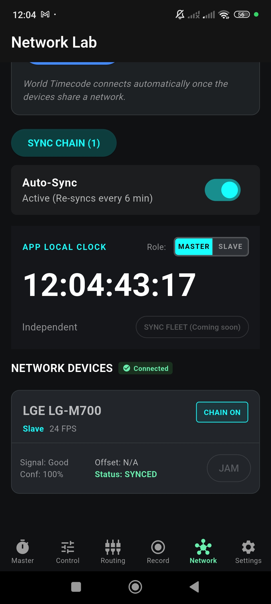
| Status | Meaning |
|---|---|
| Drifting | Device is connected but timecodes are diverging. Sync is required. |
| COMMITTING | Sync is in progress. The Master is sending its clock reference to the Slave. |
| Synced | Timecodes are aligned. Auto-Sync will periodically re-sync to maintain accuracy. |
When enabled, Auto-Sync re-synchronizes at regular intervals (default: every 6 minutes). This ensures long-running sessions maintain frame-accurate alignment even as device clocks drift.
Jam Sync
Jam Sync is a one-time clock copy from an external source. Unlike Slave mode (which continuously chases), a Jam copies the current timecode value and then free-runs independently from the device's own crystal oscillator.
Jam Sources
OSRTIME can Jam from two sources:
Receives Linear Timecode via the microphone input or USB audio interface. Decodes the signal, displays the timecode, and allows one-tap Jam.
Receives timecode from a network Master device. Shows the Master identity, frame rate, confidence, and signal freshness (age).
Performing a Jam
Navigate to Control
Open the Control page. Scroll down to see the LTC INPUT MONITOR and WIFI INPUT sections.
Confirm Signal Lock
Ensure the source is active. For LTC, the monitor should show LOCKED @ 24 FPS (or your target rate). For WiFi, the Master's timecode and confidence should be visible.
Tap "JAM FROM …"
Press JAM FROM LTC or JAM FROM WIFI. The Jam Status section will immediately update to show the copied timecode and its source.
LTC Lock
When a valid LTC signal is being received, the LTC Input Monitor turns blue and displays the decoded timecode with the detected frame rate:
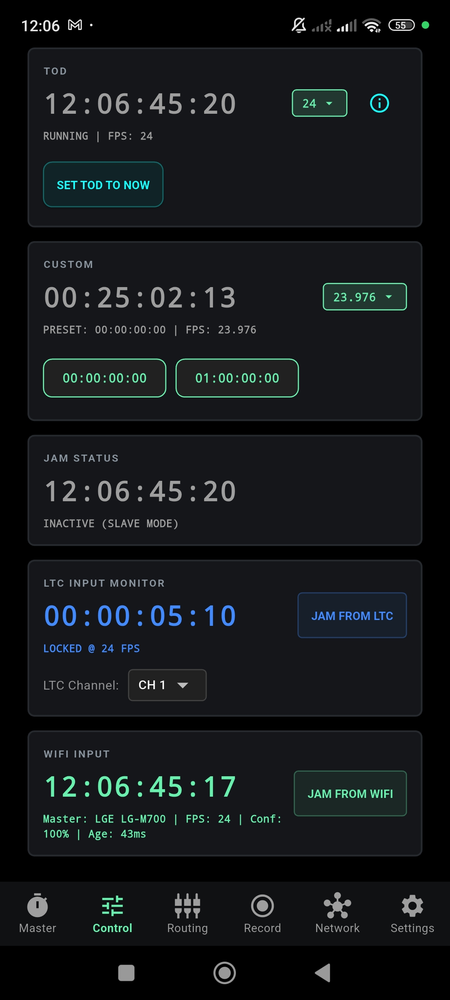
LTC is an uncompressed digital audio signal. Before monitoring LTC output, ensure headphones are disconnected or the volume is at a safe level. Accidental playback at high volume can damage hearing.
Slave Mode
In Slave mode, the device continuously tracks an external timecode source in real time. Unlike Jam (which copies once and free-runs), Slave mode keeps the display locked to the incoming signal.
Selecting the Slave Source
When switching to Slave mode, a modal prompts you to choose the timecode source:
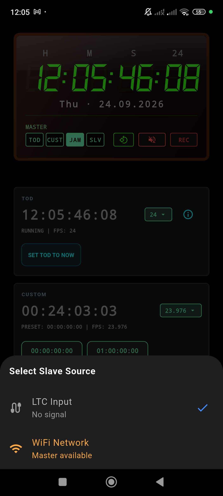
Chases the timecode decoded from the audio input. Requires a continuous LTC signal.
Chases the timecode broadcast by a network Master. Requires an active Wi-Fi connection with a Master device.
Active Slave State
Once Slave mode is active, the Control page reflects the new state:
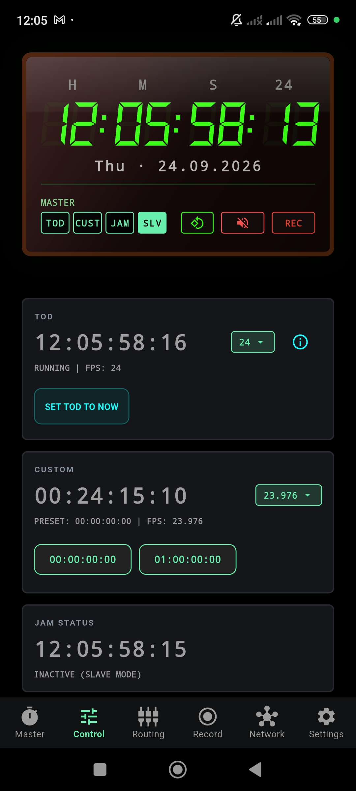
The Master display will also update its mode chip to indicate the slave source — for example, WIFI SLV for Wi-Fi slave operation.
Jam copies the external timecode once, then free-runs from the device's own clock. Best for battery-efficient, long-duration operation where occasional drift is acceptable.
Slave continuously tracks the external source. Guarantees frame-accurate alignment but requires a persistent connection to the source signal.
Settings
The Settings page provides global configuration options for language, audio behavior, and recording preferences.
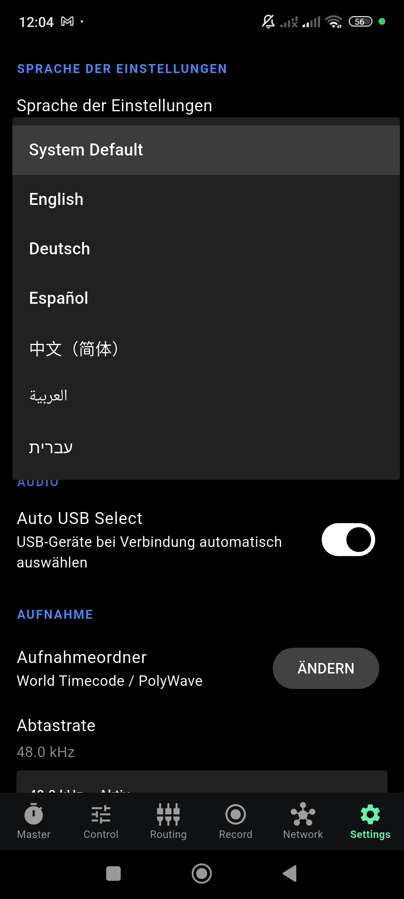
Language
OSRTIME supports the following interface languages:
- System Default
- English
- Deutsch
- Español
- 中文（简体）
- العربية
- עברית
Audio
- Auto USB Select — Automatically switches to a USB audio device when one is connected. Disable this to keep using the built-in microphone even when a USB device is plugged in.
Recording
- Recording Folder — The storage location for recorded BWF files. Tap CHANGE to select a different directory.
- Sample Rate — Default: 48.0 kHz. This is the standard broadcast sample rate for professional audio.
Troubleshooting
Common solutions for sync, audio, routing, and timecode workflow issues.
LTC Signal Not Detected
- Ensure the Microphone permission is granted.
- Check the Routing page — is the correct input device selected?
- Verify the LTC source is active and the cable connection is secure.
- Try pressing RESCAN AUDIO DEVICES on the Routing page.
Devices Not Discovering Each Other
- Confirm all devices are connected to the same Wi-Fi network or hotspot.
- Check that Local Network permissions are granted.
- Some public or enterprise Wi-Fi networks block device-to-device communication. Use a mobile hotspot instead.
Sync Status Stuck on "Drifting"
- Tap SYNC CHAIN to initiate synchronization manually.
- Ensure one device is set as MASTER and the other as SLAVE.
- Enable Auto-Sync to maintain continuous alignment.
USB Audio Not Recognized
- Only class-compliant (driverless) USB audio interfaces are supported.
- Use a USB OTG adapter if your device has a USB-C port.
- Press RESCAN AUDIO DEVICES after connecting.
- Check Settings → Auto USB Select is enabled.
Recording Not Starting
- Check that Storage permissions are granted.
- Verify the recording folder exists and has sufficient space.
- Ensure at least one channel is armed on the Routing page.
For issues not covered here, contact us via the Beta page or reach out directly at support.